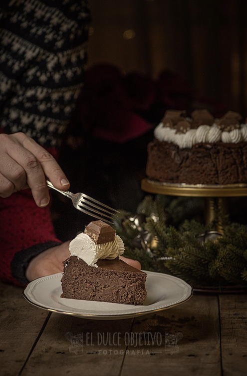

CHEESCAKE DE TURRON DE CHOCOLATE
Ingredientes:
- 4 huevos talla L
- 450 gr de queso crema
- 250 gr de turrón de chocolate
- 200 ml de nata para montar
- 30 gr de cacao puro en polvo
- 100 gr de azúcar blanca
Preparación:
- Precalentamos el horno a 180º con calor arriba y abajo.
- Tal y como hemos indicado en la intro, humedecemos el papel de hornear y forramos nuestro molde, en este caso de 15 cm.
- Son complicaciones, ponemos todos los ingredientes, incluido el turrón de chocolate troceado en un procesador de alimentos o vaso de batir y lo batimos todo hasta tener una masa con textura de batido de chocolate. Ojo no beber así jeje.
- Solo tenemos que verter la masa en el molde dar un par de golpes para que se asiente y meter en el horno.
- Hornear durante 50 minutos.
- Al terminar, dejar enfriar en el interior del horno con la puerta entre abierta, para que no sufra cambio de temperatura brusco y se nos raje.
- Cuando esté a temperatura ambiente, cubrir con film y llevar al frigo al menos una noche
- Desmoldar con cuidado, enplatar y decorar al gusto. Yo le he puesto un poco de nata montada con trocitos de turrón. Aquí os dejo libre elección, podéis trocear finito un poco de turrón de chocolate y ponerlo por encima para tener esa textura o dejar tal cual.
